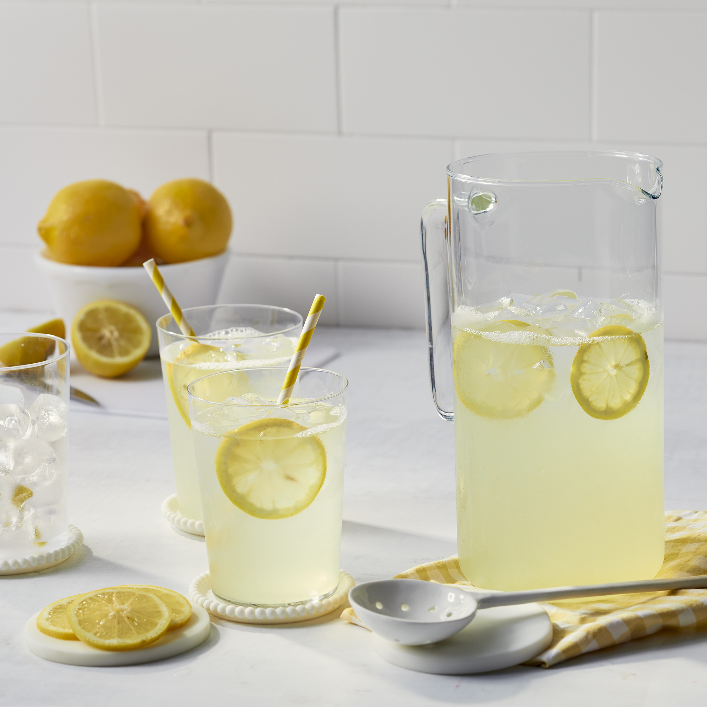

Lemonade

Description
This classic lemonade recipe is the one my mom used to make for me when I was little.
Ah, the taste of summer! It's the perfect combination of sweet and tart.
When using a clear pitcher, adding a few of the juiced lemon halves makes it look prettier.
Ingredients
- 6 lemons
- 1 cup white sugar
- 6 cups water, or more as needed
Directions
Step 1
- Juice lemons; you should have 1 cup juice.
Step 2
- Combine juice, sugar, and water in a 1/2-gallon pitcher.
- Stir until sugar dissolves.
- Taste and add more water if desired.
Step 3
- Chill and serve over ice.